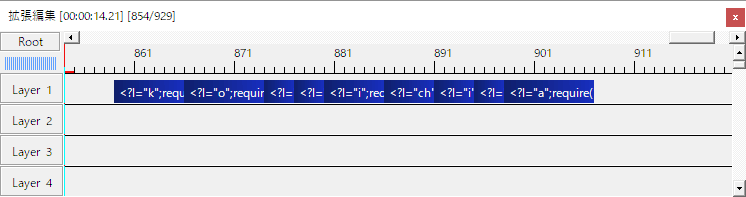

付属プラグイン
拡張編集RAMプレビュー
拡張編集RAMプレビュー は一時的にメモリー上に描画結果を溜め込み、後からそれを直接再生することにより描画負荷を削減し、コマ飛びを軽減した状態でプレビューを行うことができるプラグインです。
このプラグインはメモリーを大量に必要とするため、空きメモリーに余裕がない環境では上手くコマ飛びが解消されないことがあります。
拡張編集RAMプレビュー は AviUtl のメインメニューより 設定→拡張編集RAMプレビューの設定 を選ぶと設定用のウィンドウが表示されます。

| 機能名 | 説明 |
|---|---|
通常RAMプレビュー |
モード切り替え用のリストボックスです。RAMプレビュー に切り替えると、事前に作成したキャッシュデータを元に動画を再生します。Ctrl + Shift + R のショートカットキーでも切り替え可能です。 |
選択範囲からキャッシュ作成 |
AviUtl で選択されている範囲を元にしてキャッシュデータの作成を開始します。 キャッシュの作成が完了すると自動的に RAMプレビュー モードに切り替わります。Ctrl + R のショートカットキーでも作成できます。 |
無圧縮通常品質解像度1/2解像度1/4 |
キャッシュの容量と品質をコントロールするための項目です。無圧縮 - 出力されたそのままの品質で保存通常品質 - 色の再現性を犠牲に容量を 1/4 に削減解像度1/2 - 解像度を犠牲に容量を 1/16 に削減／50%サイズでのプレビュー向け解像度1/4 - 解像度を犠牲に容量を 1/64 に削減／25%サイズでのプレビュー向けなお、切り替える前に作成されていたキャッシュの容量は変化しません。 |
プレビュー中は赤枠を描画 |
RAMプレビュー に切り替えている間、動画の周囲に赤枠を描画します。 |
キャッシュ消去 |
作成したキャッシュデータを消去します。 消去後は自動的に 通常 モードに切り替わります。Ctrl + E のショートカットキーでも消去できます。 |
- 範囲を指定する
書き出し範囲を指定する時と同じように範囲選択をします。
例えば拡張編集上で始点としたい場所にカーソルを置き、終点にしたい場所をShift + クリックで範囲選択できます。
どのぐらいのフレーム数でどのぐらいの容量になるのかのおおよその目安をつけるために、最初は短い範囲にするのを推奨します。 選択範囲からキャッシュ作成を押す
拡張編集RAMプレビューの設定ダイアログにある選択範囲からキャッシュ作成ボタンを押すか、Ctrl + Rを押して、キャッシュの作成を開始します。
これには時間がかかりますが、ESC キーを押すと任意のタイミングでキャンセルすることができます。- プレビューする
完了すると、キャッシュを作成した区間のみ映像や音声が出るRAMプレビューモードになります。
この状態でプレビューの再生を行うとメモリ上に保存された映像から再生されるため、作成中の動画の内容に関係なく一定の負荷でプレビューすることができます。 - キャッシュを消去する
確認が終わったあとはキャッシュ消去ボタンを押してメモリを専有しているキャッシュデータを消去します。
キャッシュの消去を行うと自動的に通常モードに戻ります。
動画ハンドル開放
動画ハンドル開放 は、拡張編集が内部的に保持したままにしている動画ファイルや音声ファイルのハンドルを開放し、ファイルの上書き、削除、移動などを問題なく行えるようにするためのプラグインです。
動画ハンドル開放 は AviUtl のメインメニューより 編集→動画ハンドル開放→動画ハンドルを開放 を選ぶか、Ctrl + F5 のショートカットキーを使うことで使用できます。
項目を選んでもウィンドウやメッセージボックスが出ることはなく、すぐに開放処理が行われます。
ごちゃまぜドロップス
PSDToolKit ではごちゃまぜドロップスを使用したドラッグ＆ドロップ拡張を行っており、一部のファイルを拡張編集のタイムラインにドラッグ＆ドロップした時の挙動が強化されています。
*.psd ファイル
*.psd ファイルを投げ込むと PSD ファイルオブジェクト を生成し、PSDToolKit ウィンドウの「ファイル切り替えタブ」にそのファイルを追加します。
*.wav ファイル
Shift キー を押しながら *.wav ファイルを投げ込むと、以下の追加処理を発動可能です。
- 口パク準備の自動生成
- 多目的スライダーの自動生成
- 字幕準備の自動生成（テキストファイルが存在する場合のみ）
詳しくはチュートリアルを参照してください。
なお P.wav_firemode で発動方法を変更することも可能です。
*.lab ファイル
*.lab ファイルを投げ込むと 口パク準備（音素のみ） を生成します。

個々の音素を書き換えたり長さや位置の変更なども拡張編集上で行えるため、必要に応じて微調整が可能です。
*.srt ファイル
*.srt ファイルを投げ込むと複数の 字幕準備 を一括で生成します。